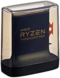
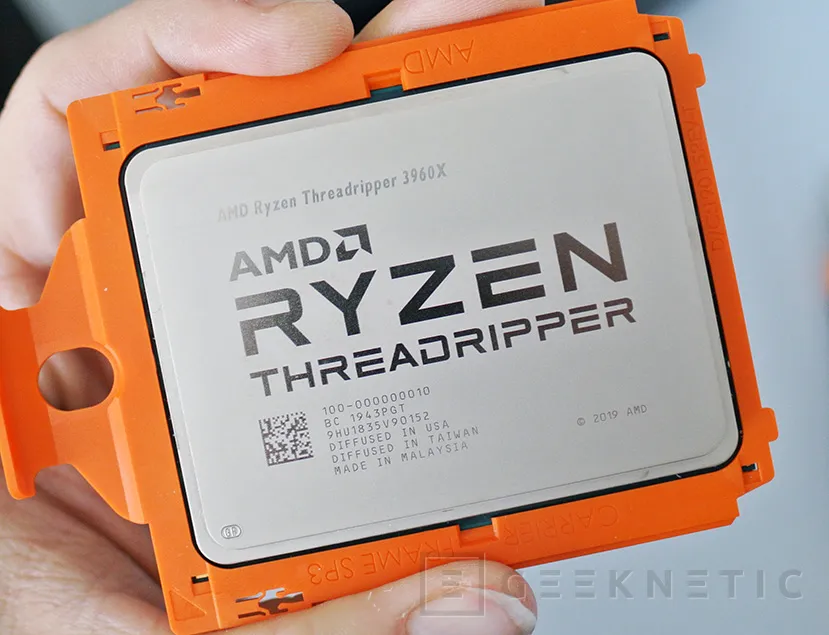
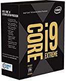
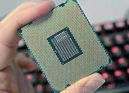

La obra maestra de AMD para la nueva generación de procesadores de alto rendimiento para megatarea y renderizado. Un bloque compuesto por 4 silicios que suman nada menos que 32 núcleos físicos y 64 lógicas con la nueva arquitectura Zen 2 de 7 nm. Con ello se ha mejorado notablemente el IPC y el bus Infinity Fabric, soportando ahora memorias de 3200 MHz y 72 líneas PCIe 4.0. No hay algo mejor para equipos de escritorio nivel entusiasta por ahora, a la espera de ese 64/128 que podría ser la panacea.


Éste hemos tenido la suerte de probarlo nosotros y las sensaciones que nos ha dejado han sido espectaculares. No es el más potente, pero la solvencia que ha demostrado tener lo colocan muy por encima de los procesadores X y XE de Intel a día de hoy. Una CPU que además ha demostrado ser bastante fresco incluso con disipadores por aire de un solo bloque como nuestro Noctua. Y en este caso, la remesa no ha mostrado problema alguno en las frecuencias de trabajo como sí ocurriera con los Ryzen 3000, así que tenemos su rendimiento máximo sin problema.
Ésto es lo que mejor que Intel tiene para su plataforma entusiasta, una CPU que se mantiene con el proceso de fabricación de 14 nm pero con arquitectura revisada Cascade Lake que mejora tanto el IPC como su capacidad de overclocking. El rendimiento sin embargo se sitúa cerca del anterior i9-9980XE,debido a la baja frecuencia base con la que lo tenemos disponible. Será a los 4,6 – 4,9 GHz en donde demuestre de todo lo que es capaz, ya que admite importantes subidas de frecuencia, eso sí, prepara una buena refrigeración líquida de 280 o 360 mm porque se calienta bastante a estas frecuencias.
Algo que sí ha sido espectacular es su descenso de precio, Intel no está para subirse por las ramas con un AMD desatado, y esta potente CPU la tendremos por “solo” 1099 euros, mucho menos que los Threadripper 30000.
